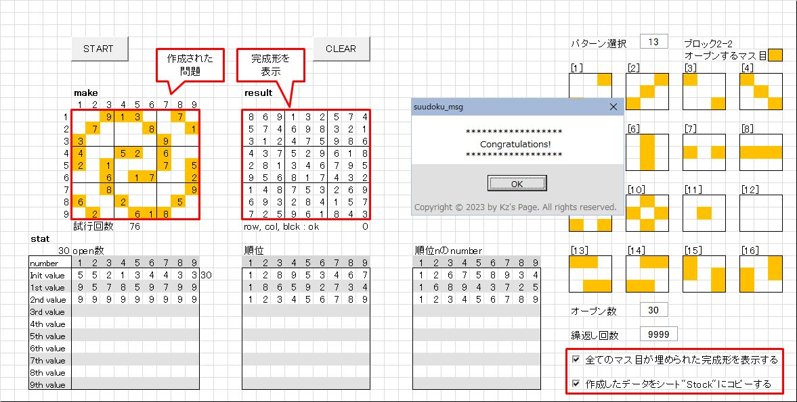
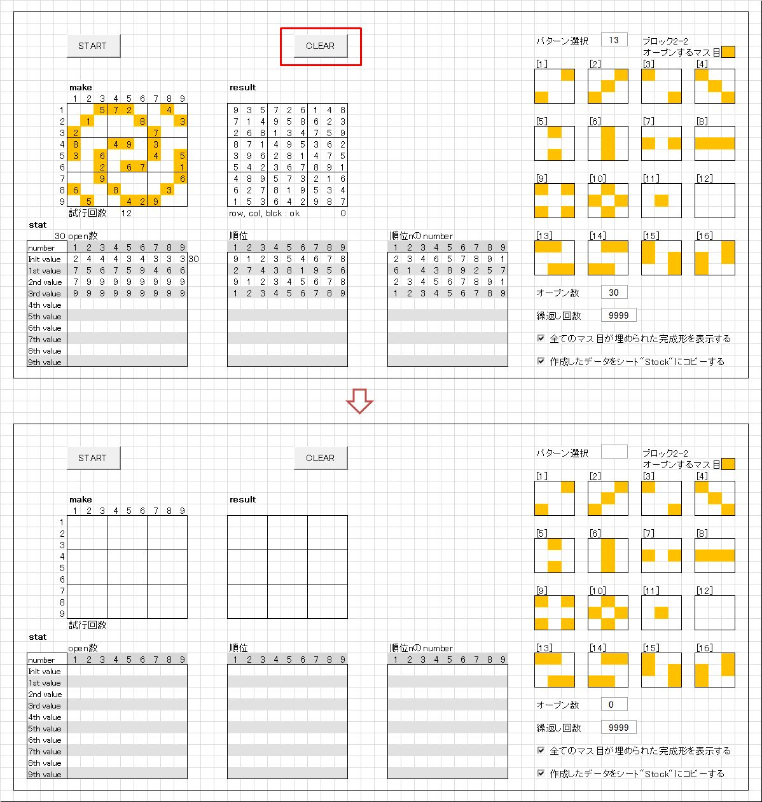
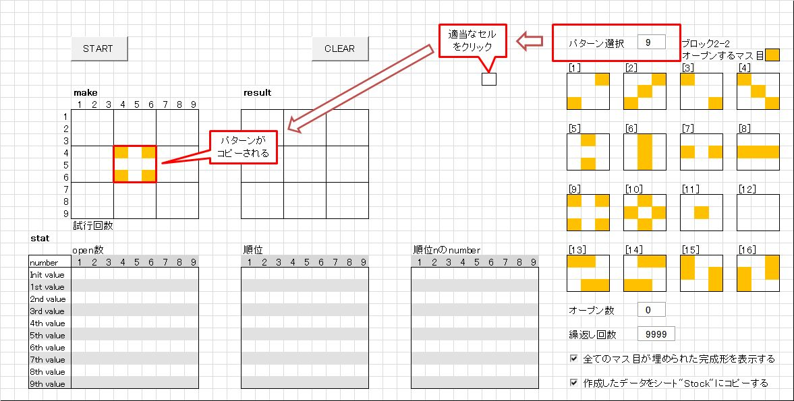
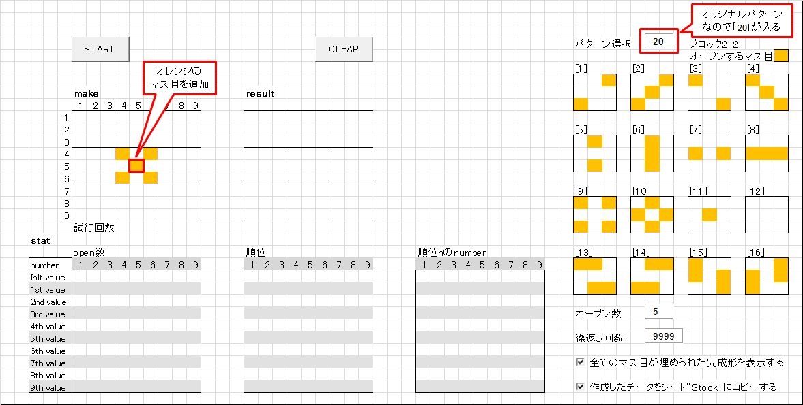
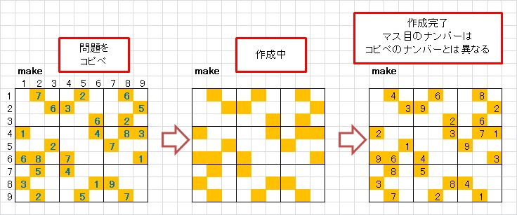
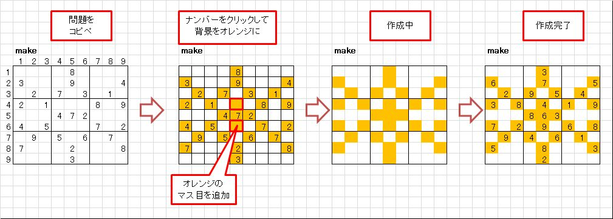

数独問題作成ツール 別解法
これまで公開してきた｢数独問題作成ツール｣ (以下、｢数独ツール｣と略記します)は、最初に9x9の全てのマス目を埋めた完成形を作成し、
ブランクにできるマス目を、増やせるだけ増やしていくという方法で問題を作成していました。
詳細は
suudoku_doc
をご一読下さい。[※1]
この方法では最初にオープンするナンバーのマス目の数(以下オープン数と略記)が23以上の問題を作ることができます。
しかし、オープンするマス目のパターンはランダムに選ばれるため、
自分が思い描いたパターンの問題を作ることはできませんでした。

[※1]
併せて｢数独数独問題作成ツール アップデート｣(以下、｢数独アップデート｣と略記します)もご覧下さい。
リンク：
suudoku_update01
別解法は、自由なパターンの問題を作成します
問題作成方法を順に説明します。
-
エクスプローラーから｢z.suudoku_04.xlsm｣を開きます。

-
パターンの作り方から問題作成までを説明します。
-
｢make｣と表示されている枠内でオープンするマス目をオレンジ色で埋めて行きます。
枠内の適当なセルをクリックすると、そのセルと対角のセルがオレンジ色に変わります。
-
思い描いたパターンを作って行きます。
消したい場合は、対角のセルをクリックするとオレンジ色が消えます。
-
作成したパターンの例を以下に示しました。

｢START｣ボタンを押すと問題作成が開始されます。
-
問題の作成の成功すると、以下のような画面になります。

オレンジ色のセルにオープンするナンバーが書き込まれていることが分かります。
画面右下のチェックボックスがチェックされている場合は、
完成形が表示され、シート｢Stock｣に作成された問題がコピーされます。
-
-
オープンパターンを作るときの補足を以下に記します。
-
｢CLEAR｣ボタン
このボタンを押すと、画面をクリアします。
起動時の画面は、前回作業した状態が保持された状態で画面が開きます。
前回作ったオープンパターンを少し直して、新しい問題を作成することができます。
しかし、新たなパターンを作りたいときなどは、このボタンを利用して下さい。
-
中心ブロックの規定パーターンの利用
｢数独ツール｣や｢数独アップデート｣同様、画面右側に中心ブロックのパターンが表示されています。
パターン選択に使用したい番号を入力して、適当なセルをクリックすると、｢make｣の中心ブロックにコピーされます。
その上で更にオレンジのセルを追加した場合は、パターン選択の入力欄に｢20｣が入ります。
これは、オリジナルのパターンという意味です。
-
パターン作成のコピペ
別のエクセルファイルなどから作成済みの問題をコピーして
新たに問題を作成することもできます。
ナンバーがオープンされているマス目がオレンジ色の場合は、そのまま｢START｣ボタンを押すこともできますし、
少しパターンを修正してから作成を開始することもできます。
ナンバーがオープンされているマス目がオレンジ色ではない場合は、
ナンバーのマス目をオレンジ色にする必要があります。
問題の作成はセルの背景色のみを見に行っているためです。
-
オープンするマス目の数について
27～32くらいが面白いパターンが作れますし、実際に解くときも無理なく解くことができると思います。
私がデバッグ中に調べた限りでは、25以上で問題が作成できることを確認しています。